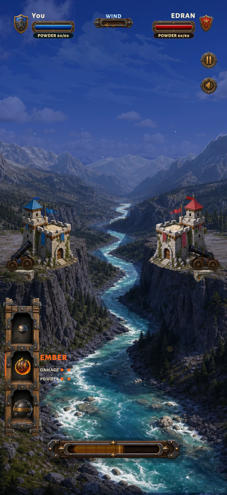
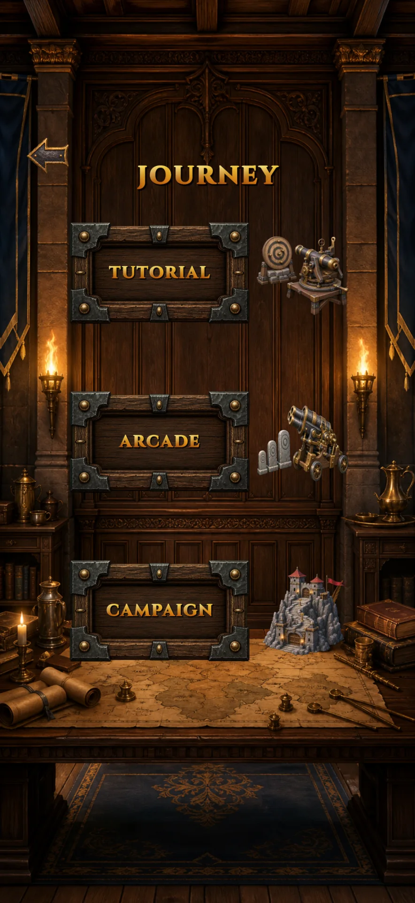
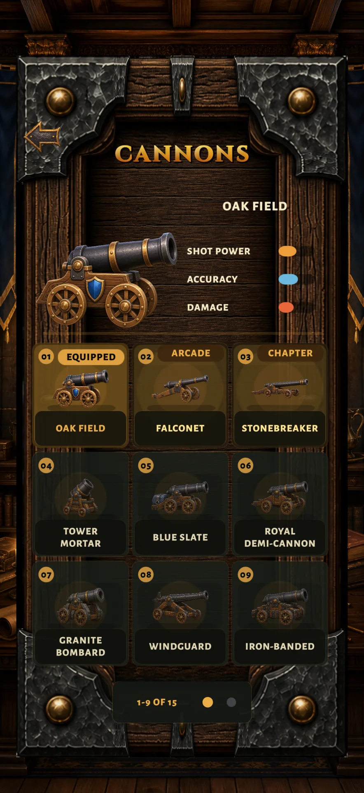

Choisis le boulet
Prends le tir adapté à la cible et à la poudre que tu peux dépenser.

Duels d’artillerie au pied des remparts
Arme ton canon. Jauge la portée. Ouvre une brèche. Chaque boulet ébranle les remparts jusqu’à mettre le cœur à nu.
Partie rapide contre l’IA · 1v1 local · Campagne · Arcade
Visuel Siege Winds · Direction artistique actuelle
01 / Le siège
Ébranle la pierre. Romps les appuis. Ouvre une brèche jusqu’au cœur. Les remparts gardent la marque de chaque boulet : une muraille abattue prépare le tir suivant.
Les captures présentent le build anglais actuellement en développement.
02 / Prépare le tir
Choisis le pan de muraille qui doit céder. Puis transforme ta trajectoire en brèche.
Prends le tir adapté à la cible et à la poudre que tu peux dépenser.
Monte ou baisse le canon pour franchir la gorge et atteindre le fort.
Engage la charge, libère le boulet et observe les dégâts.

03 / Choisis la bataille
Quatre façons directes de livrer bataille sont présentes dans le build actuel.
Lance immédiatement un duel d’artillerie rapide contre l’ordinateur.
SoloPasse le même téléphone, transmets le tour et règle la revanche à deux.
Même appareilConquiers 20 tours entre rivière, désert, neige et jungle.
ProgressionGravis une route Arcade de 12 victoires, puis affronte trois forts maîtres.
Master Circuit04 / Choisis le canon
Collectionne quinze canons en jouant et en franchissant des étapes claires. Chacun possède une silhouette et un maniement distincts.
Les écrans de progression présentent le build anglais actuellement en développement.


05 / La règle du siège
Une progression sans tirage aléatoire payant ni avantage à acheter : le meilleur tir décide du vainqueur.
La prochaine bataille
Siege Winds est en préparation pour iPhone et Android. Les liens vers les stores et la date de sortie paraîtront ici lorsqu’ils seront arrêtés.
Bientôt disponible · iOS et Android